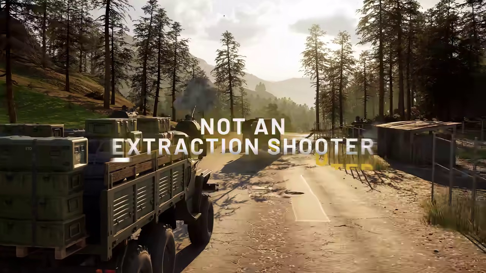
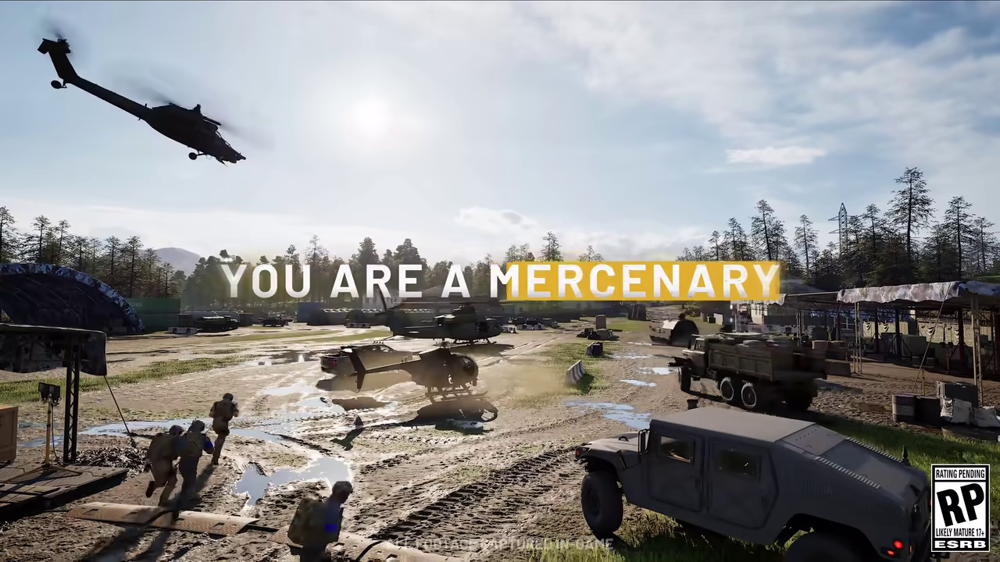

Technical & Optimization
Comprehensive guides and data archives for technical & optimization in WARDOGS.

🎬 Official Trailer: 100-Player Three-Faction WarfareWARDOGS Best Settings, FPS Boost & Performance Optimization Guide
Optimal graphics settings, stutter fixes, Lossless Scaling, and max FPS presets.

🎬 Official Trailer: 100-Player Three-Faction WarfareWARDOGS System Requirements: Can My PC Run It (Minimum vs Recommended Specs)
Official hardware requirements, GPU/CPU benchmarks, RAM, and SSD storage requirements.
 🎬 Official Trailer: 100-Player Three-Faction Warfare
🎬 Official Trailer: 100-Player Three-Faction Warfare
WARDOGS Server Status, Connection Issues & Port Forwarding Guide
Server downtime, matchmaker errors, port forwarding, and network ping stabilization.